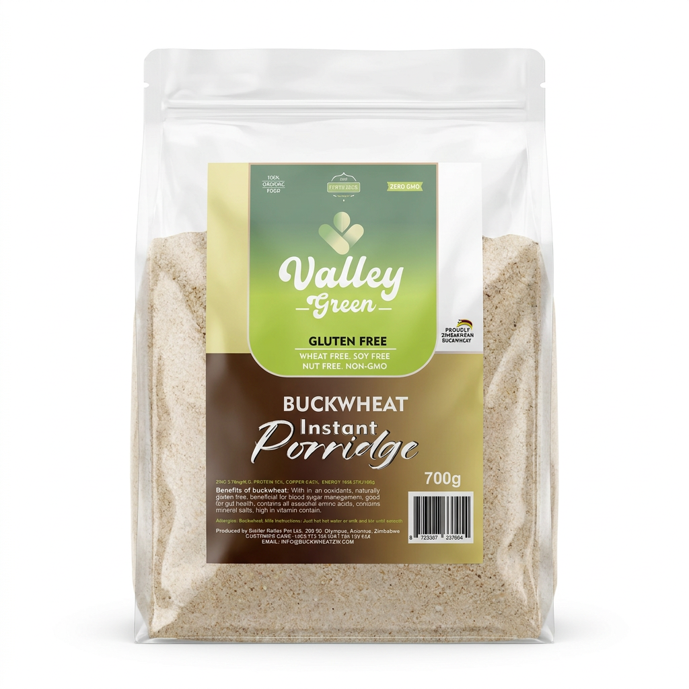

RangeInstant Porridge
N°04 · Ready in minutes
Instant Porridge
A warm bowl of buckwheat, in minutes.

Why it matters
The story behind the pack.
Pre-milled and lightly toasted for fast cooking, our instant porridge delivers the full nutrition of whole buckwheat in a smooth, comforting bowl.
Ideal for busy mornings, school feeding programmes and recovery meals — simply add hot water or milk and stir.
01
Ready in under 3 minutes
02
Gluten free · nut free · non-GMO
03
High in fibre & antioxidants
04
Suitable for all ages
Pack & supply
How it ships.
Retail pack
700 g
Wholesale
10 kg cartons
Shelf life
9 months
Ways to enjoy
Practical, everyday uses.
01
Quick weekday breakfast
02
Overnight soaked porridge
03
Base for fruit and nut bowls
04
Nutritious infant feeds
Keep exploring
See all ten